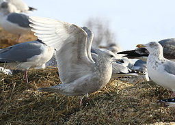
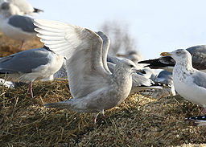

| Iceland Gull | |
|---|---|
|  | |
| Conservation status | |
| Binomial name | |
| Larus glaucoides Meyer, 1822, Greenland |
|
| Subspecies | |
|
Larus glaucoides glaucoides Meyer,1822 Larus glaucoides kumlieni Brewster, 1883 |
| Iceland Gull | |
|---|---|
|  | |
| Conservation status | |
| Binomial name | |
| Larus glaucoides Meyer, 1822, Greenland |
|
| Subspecies | |
|
Larus glaucoides glaucoides Meyer,1822 Larus glaucoides kumlieni Brewster, 1883 |
The Iceland Gull, Larus glaucoides, is a large gull which breeds in the Arctic regions of Canada and Greenland, but not Iceland, where it is only seen in the winter. It is migratory, wintering from in the North Atlantic as far south as the British Isles and northernmost states of the eastern USA, as well as in the interior of North America as far W as the western Great Lakes. It is much scarcer in Europe than the similar Glaucous Gull.
The American taxon Kumlien's Gull is often considered a subspecies of Iceland Gull.
This species breeds colonially or singly on coasts and cliffs, making a nest lined with grass, moss or seaweed on the ground or cliff. Normally, 2-3 light brown eggs are laid.
The nominate subspecies, glaucoides, is a fairly large gull, very pale in all plumages, with absolutely no melanin in the tips of the primaries in adult plumage. Adults are pale grey above, with a yellowish-green bill. Immatures are very pale grey; the bill is more extensively dark than with Glaucous Gull, and lacks pink. It is smaller and thinner billed than the very large Glaucous Gull, and is usually smaller than the Herring Gull. It takes four years to reach maturity. The call is a "laughing" cry like Herring Gull, but higher pitched. For a description of Kumlien's Gull, see that taxon's entry.
These are omnivores like most Larus gulls, eating fish, molluscs, offal, scraps and eggs. These birds forage while flying, picking up food at or just below the water's surface, also feeds while walking or swimming. Their scavenging habits lead them to frequent garbage dumps, sewage outlets and places where fish are cleaned.

{kind=link}